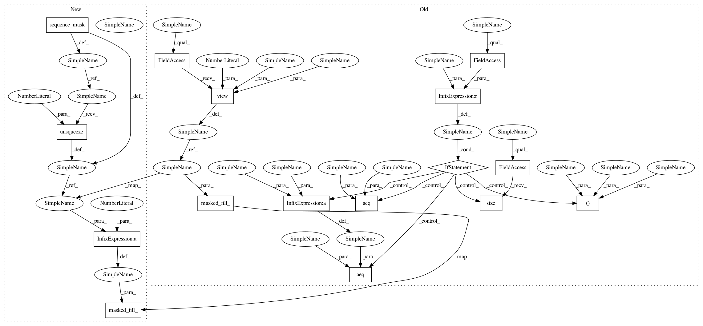

7557794793295e3b89130daf27bf284206eda8e8,onmt/modules/GlobalAttention.py,GlobalAttention,forward,#GlobalAttention#,108
Before Change
aeq(batch, batch_)
aeq(sourceL, sourceL_)
if self.mask is not None:
beam_, batch_, sourceL_ = self.mask.size()
aeq(batch, batch_*beam_)
aeq(sourceL, sourceL_)
if coverage is not None:
cover = coverage.view(-1).unsqueeze(1)
context += self.linear_cover(cover).view_as(context)
context = self.tanh(context)
// compute attention scores, as in Luong et al.
align = self.score(input, context)
if self.mask is not None:
mask_ = self.mask.view(batch, 1, sourceL) // make it broardcastable
align.data.masked_fill_(mask_, -float("inf"))
// Softmax to normalize attention weights
align_vectors = self.sm(align.view(batch*targetL, sourceL))
align_vectors = align_vectors.view(batch, targetL, sourceL)
After Change
align = self.score(input, context)
if context_lengths is not None:
mask = sequence_mask(context_lengths)
mask = mask.unsqueeze(1) // Make it broadcastable.
align.data.masked_fill_(1 - mask, -float("inf"))
// Softmax to normalize attention weights
align_vectors = self.sm(align.view(batch*targetL, sourceL))
align_vectors = align_vectors.view(batch, targetL, sourceL)
In pattern: SUPERPATTERN
Frequency: 4
Non-data size: 16
Instances
Project Name: OpenNMT/OpenNMT-py
Commit Name: 7557794793295e3b89130daf27bf284206eda8e8
Time: 2017-12-06
Author: guillaume.klein@systrangroup.com
File Name: onmt/modules/GlobalAttention.py
Class Name: GlobalAttention
Method Name: forward
Project Name: OpenNMT/OpenNMT-py
Commit Name: 8901f6557a9eed5621d5e9cf74d5c38b2ace8f18
Time: 2017-12-06
Author: guillaume.klein@systrangroup.com
File Name: onmt/modules/GlobalAttention.py
Class Name: GlobalAttention
Method Name: forward
Project Name: OpenNMT/OpenNMT-py
Commit Name: c5b51c0cfb4329ef442c0188c3815971afa6c8f3
Time: 2017-12-01
Author: guillaume.klein@systrangroup.com
File Name: onmt/modules/GlobalAttention.py
Class Name: GlobalAttention
Method Name: forward
Project Name: OpenNMT/OpenNMT-py
Commit Name: aa4885a934a309be0a2a3e0cba286a114e718d4a
Time: 2017-12-01
Author: guillaume.klein@systrangroup.com
File Name: onmt/modules/GlobalAttention.py
Class Name: GlobalAttention
Method Name: forward